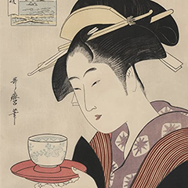

hvor kommer matcha fra?

vejen til japan
Det siges at det var den buddistiske zen munk Eisai, som tog
frø med fra Kina i 1191. Han plantede dem derefter i
haven til et buddistisk tempel i Kyoto. Han siges at være
den første person der kværnede bladende, og drak det som en varm te.

japansk teceremoni 茶湯
Den traditionelle japanske teceremoni har taget udgangspunkt i
matcha siden det 12. århundrede. Ceremonien drejer sig om at fejre
skønheden i de simple ting. Matcha er med til at berolige sindet og
stimulere sanserne igennem meditation, som er en del af ceremonien.
camellia sinesis
Matcha kommer fra planten camellia sinesis.
Hvid te, grøn te, oolong og sort te kommer fra denne plante.
Forskellen er hvordan man tilbereder bladende og hvornår man plukker dem.
Planterne får 20-40 dage i skyggen, før de plukkes.
Man plukker kun de yderste blade til matcha.
ceremonial grade
Der findes to forskellige grades af matcha,
ceremonial og culinary. Ceremonial er den højste og bedste kvalitet af matcha,
som kun drikkes. Culinary er typisk anden eller tredje høst, og kan være mere bitter.
Culinary er bedst i bagværk eller lattes.